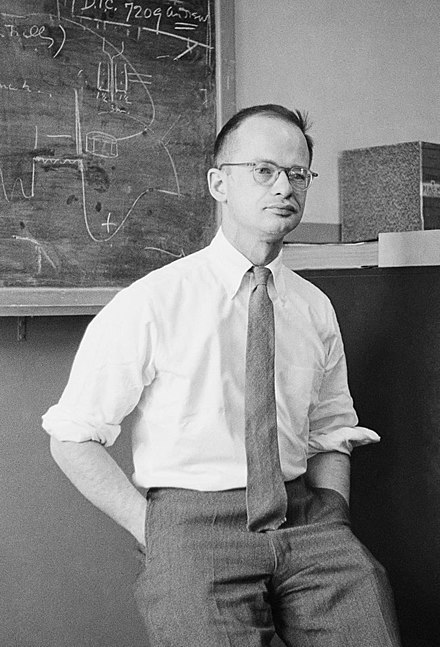

Lecture 1c: Some simple models of neurons
Idealized neurons
- To model things we have to idealize them (e.g. atoms)
- Idealization removes complicated details that are not essential for understanding the main principles.
- It allows us to apply mathematics and to make analogies to other, familiar systems.
- Once we understand the basic principles, its easy to add complexity to make the model more faithful.
- It is often worth understanding models that are known to be wrong (but we must not forget that they are wrong!)
- E.g. neurons that communicate real values rather than discrete spikes of activity.
Linear neurons

- These are simple but computationally limited
- If we can make them learn we may get insight into more complicated neurons.
y=b+\sum_i{ x_i \times w_i}
where:
- y is the output
- b is the bias
- i is the index over input connectinos
- x_i is the ith input
- w_i is the weight on ith input
Bias is often conveniently chosen to be 0 which is odd considering that it is the constraint on the activation. This is handled formally by a technique called batch normalization
These are simple but computationally limited.
- If we can make them learn we
mayget insight into more complicated neurons.
y=b+\sum_i{ x_i \times w_i}
Binary threshold units
Binary threshold units are due to Warren McCulloch and Walter Pitts from their McCulloch and Pitts (1943). They were in turn influenced by earlier work by John Von Neumann the father of modern computer and game theory.

| Warren Sturgis Mcculloch | Walter Pitts | Johnvon Neumann |
|---|---|---|
 |
 |  |
- First compute a weighted sum of the inputs.
- Then send out a fixed size spike of activity if the weighted sum exceeds a threshold.
- McCulloch and Pitts thought that each spike is like the truth value of a proposition and each neuron combines truth values to compute the truth value of another proposition!
There are two ways to write these mathematicaly:
z = \sum_i{ x_i w_i}\\ \theta = -b \\ y = \left\{ \begin{array}{ll} 1 & \text{if} \space z \ge \theta \\ 0 & \text{otherwise} \end{array} \right.
using bias
z = b+ \sum_i{ x_i w_i}\\ y = \left\{ \begin{array}{ll} 1 & \text{if} \space z \ge 0 \\ 0 & \text{otherwise} \end{array} \right.
RELU - REctified Linear Neurons AKA Linear Threshold neurons

- They compute a linear weighted sum of their inputs.
- The output is a non-linear function of the total input.
z = b + \sum _i x_iw_i \\
y = \left\{ \begin{array}{ll} z & \text{if} \space z \gt 0 \\ 0 & \text{otherwise} \end{array} \right.
Sigmoid neurons

- These give a real-valued output that is a smooth and bounded function of their total input.
- Typically they use the logistic function
- Have nice derivatives which make learning easy.
z = b + \sum _i x_iw_i \\ \space\\ y = \frac{1}{1+e^{-z}}
Stochastic binary neurons
{kind=link}
These use the same equations as logistic units. - But they treat the output of the logistic as the probability of producing a spike in a short time window.
We can do a similar trick for rectified linear units:
- The output is treated as the Poisson rate for spikes.
z = b + \sum _i x_iw_i \\ \space\\ p(s=1) = \frac{1}{1+e^{-z}}
Choosing an activation function
First let us note that many other activation function exist, this table list the following:
{kind=link}
At this point in the course we do not go into how one should pick a preferred activation function for the given problem. Some ideas for this are mentioned during the course. If we look at this from an engineering perspective some units tend to work well with other units and there are some other constraints like the range of inputs.
Linear units
Their main benefit is that they help us write down the mathematically familiar linear model which is great for getting a basic insight into the problem. We can analyze this model in term of linear and or abstract algebra using concepts like spaces, subspace, solutions, eigenvectors, eigenvalues and so on. Unfortunately linear units they are not expressive enough to perform as a basis of an efficient universal approximator. A linear model is equivalent to a large logistic regression as each variable will effect all other variables. So once we developed some intuition about our linear model we would want to switch to a non-liner units and make use of the full power of neural networks.
Binary threshold units
Their main benefit seem to be for modeling logical gates or logical circuits. Cons: have only zero and infinite gradients so are unsuitable for use in networks that are trained using gradient descent. They are used however in Hopfield networks. We will also consider later using a fully baysian approch to neural networks where we don’t need stochastic gradient descent - instead using MCMC search. It would seem that is such a settings using binary threshold units would dramatically decrease the search space.
RELU
This is the simplest non linear units - using it is essentially introducing constraints in the form of inequalities. It should only be used in a hidden layer. A classification will need to add a Softmax and a regression a linear function. RELUs can die - so a Leaky RELU can be a better choice.
Sigmoid
This is continuous and has a gradient between 0 and 1 - pros: Sigmoid with weight initialized to zero behave like a linear system. As the weights increase towards they networks. - cons: saturate and kill gradients also when output is not centered about 0 then gradients tend to go to far to 0 or 1. They converge slowly.
TANH
- pros: very high values are similar (~1) and very low values are also similar (~1)
- cons: sub optimal for a deep network, as gradient diminish in the deeper parts of the model.
RMSProp will compensate for that, but still changing to RELU will improve convergence speed c.f. (user8272359 2017). It is better then Sigmoid as it avoids the exploding gradient problem
Citation
@online{bochman2017,
author = {Bochman, Oren},
title = {Deep {Neural} {Networks} - {Notes} for Lecture 1c},
date = {2017-07-04},
url = {https://orenbochman.github.io/blog//notes/dnn/dnn-01/l01c.html},
langid = {en}
}